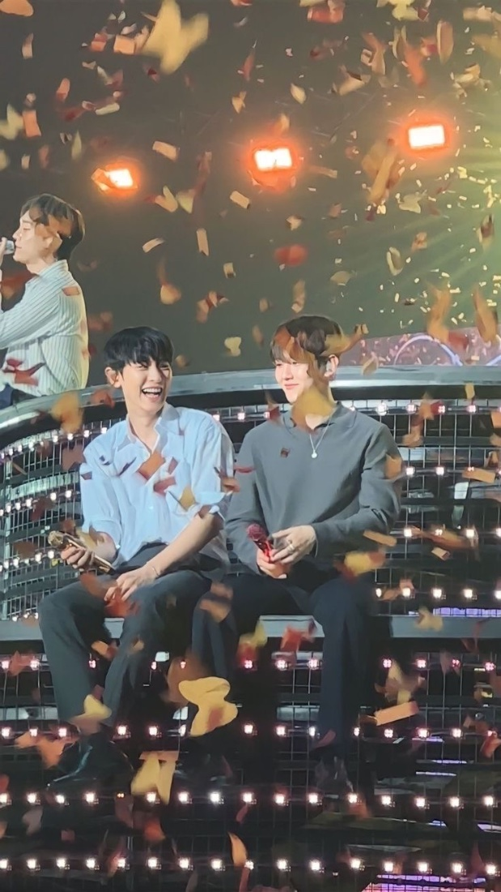
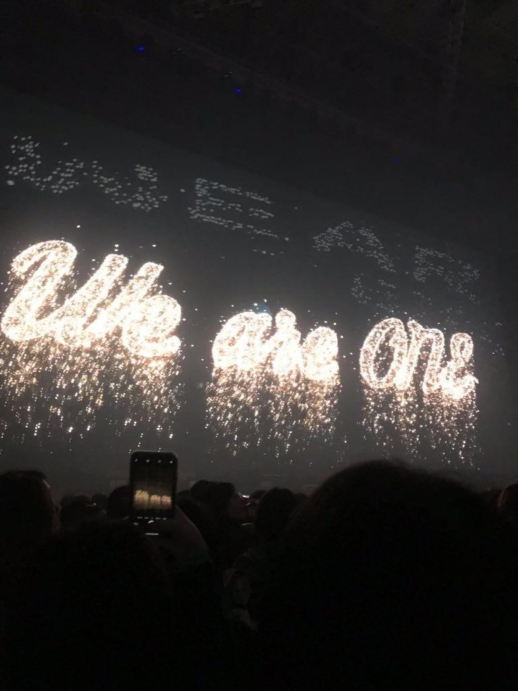
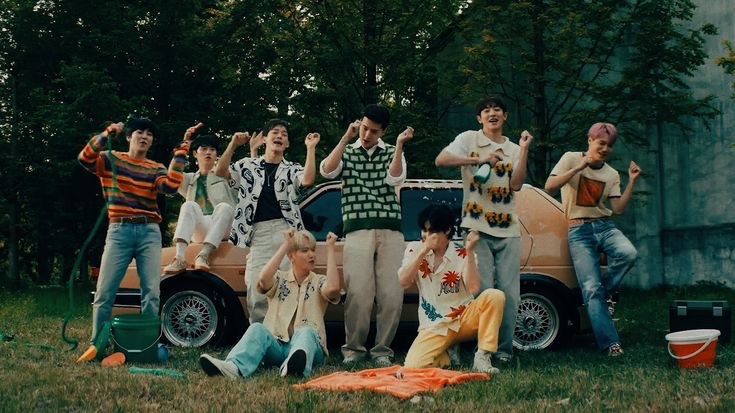
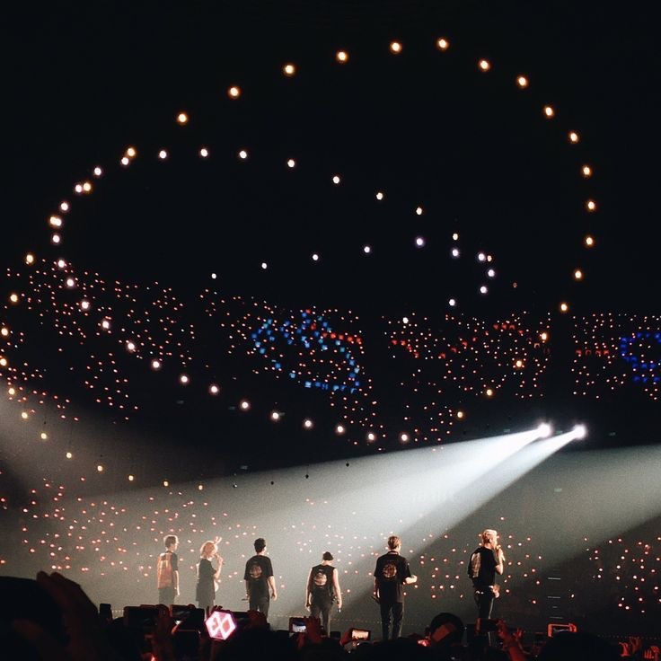
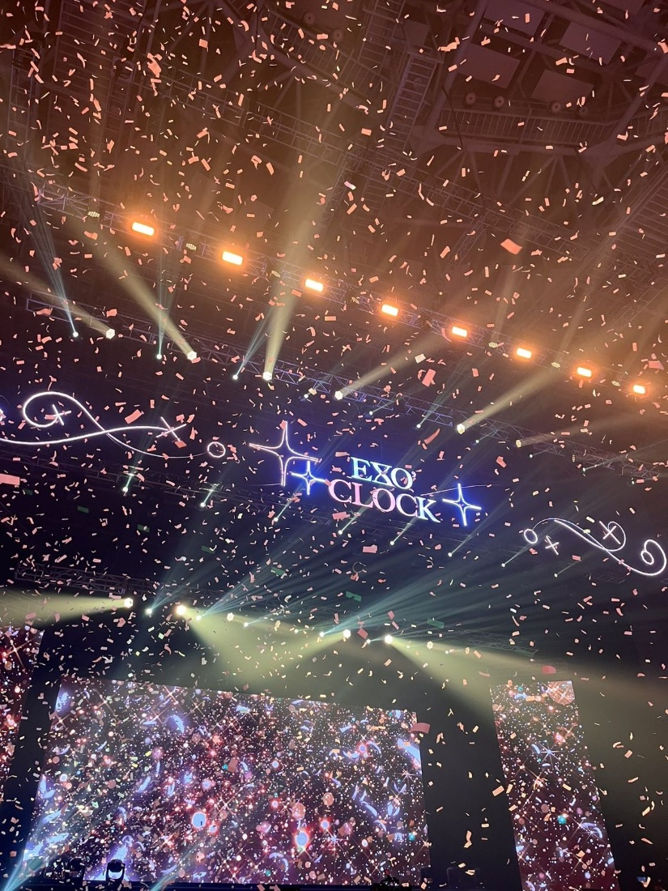
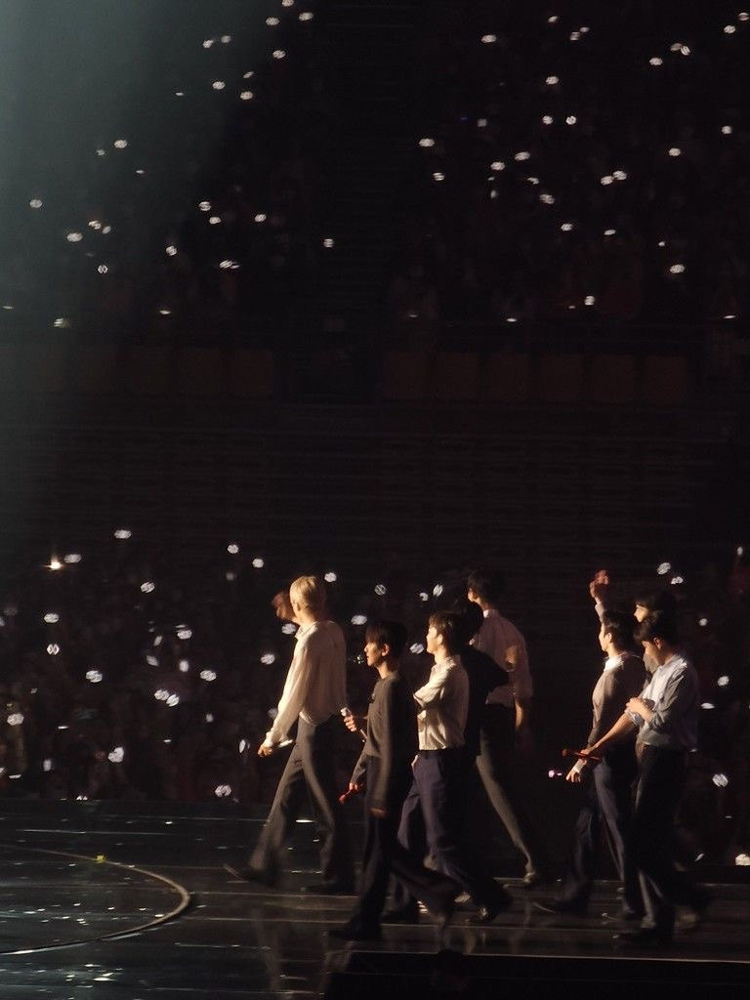
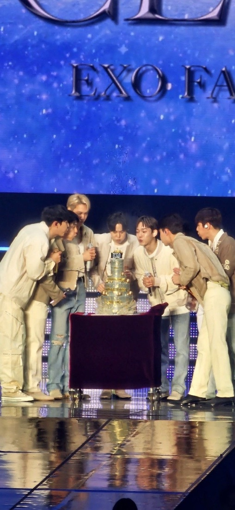
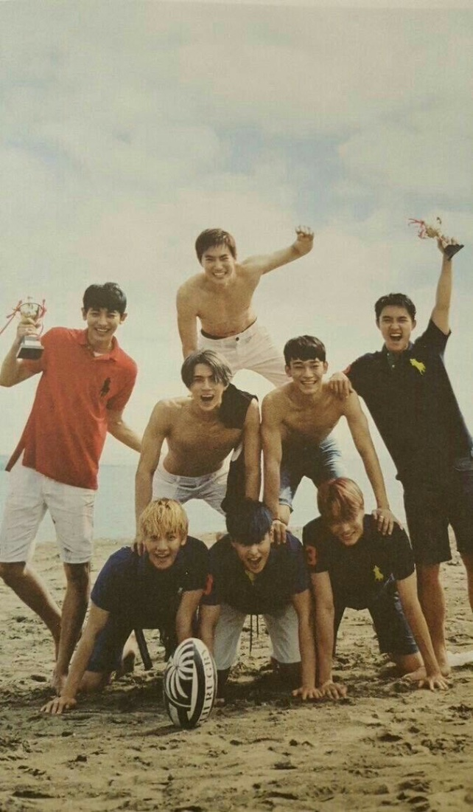
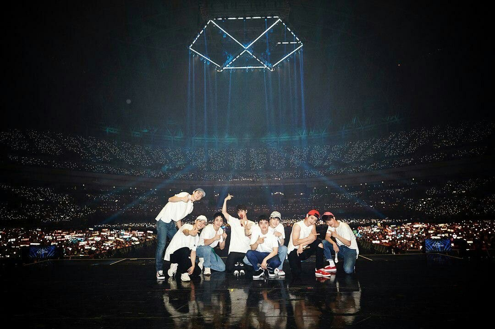
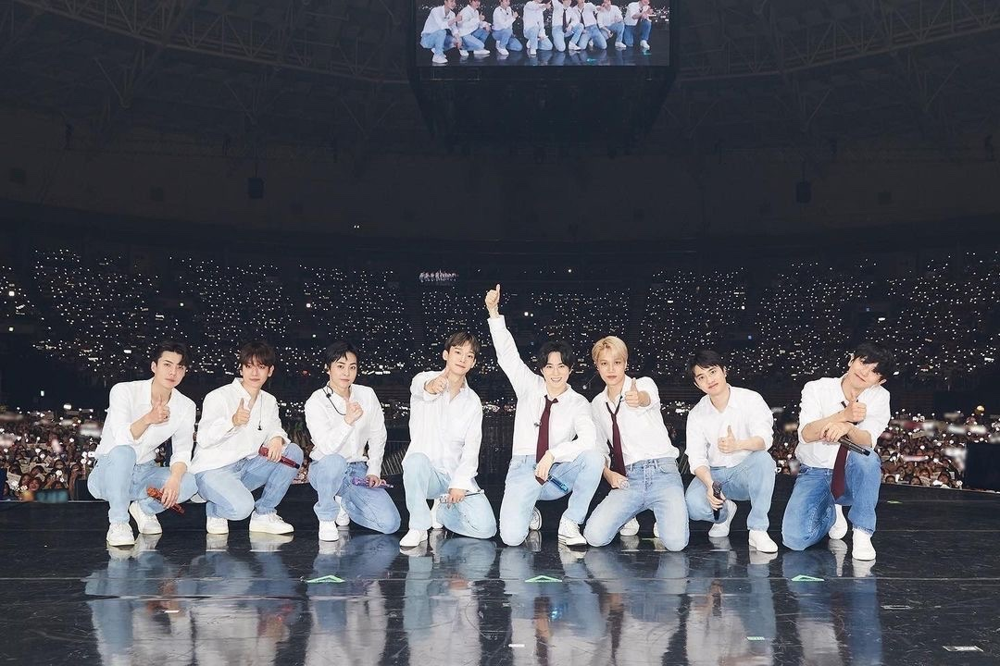

EXO · EXO-L · 2012 - 2026




Một hành trình
thật dài.
Năm tháng trôi qua. Ta đã đổi thay. Họ cũng vậy.
Và không hiểu sao, những tấm ảnh này vẫn nhớ ta từng là ai.



The road
we've shared
Rê chuột (hoặc chạm) vào từng khung ảnh để mở ra.
Chúng mình gặp các anh khi còn rất trẻ. Một bài hát, một sân khấu, và mọi thứ bắt đầu.

Ta nhìn các anh lớn lên, đổi thay, đứng trên những sân khấu ngày một rộng hơn. Ta cũng đang lớn lên, theo cách của riêng mình.

Có những ngày vui, cũng có những lúc khó khăn, có những lần chờ đợi thật dài. Nhưng ta vẫn ở đây, vẫn nghe, vẫn nhớ.

Love me, right?
Our Youth
We had a youth together.
Có thể khi ấy ta chưa biết, nhưng những năm tháng đó chính là tuổi trẻ của mình.
Ta có những bài hát để chờ, những sân khấu để mong, những cái tên khiến ngày trôi qua nhẹ nhàng hơn một chút.
Có một Neverland nhỏ trong lòng, nơi tuổi trẻ vẫn chưa chịu rời đi.
Nhiều năm nữa, có thể ta chẳng nhớ hết từng chi tiết. Nhưng ta vẫn sẽ nhớ cảm giác được trẻ, được yêu một điều gì đó bằng cả trái tim, và có những người mà âm nhạc của họ đã trở thành một phần cuộc sống.
Onward
Thời gian dần trôi. Mỗi người chọn cho mình một hướng đi. Có những thay đổi, có những khó khăn, và mỗi lần chờ đợi lại dài hơn ta nghĩ.
Những cái tên từng dành cả tuổi trẻ để theo đuổi ngày ấy chỉ còn là một phần nhỏ của cuộc sống, khi tất cả cùng lớn thêm một chút. Có thể con đường không còn như xưa. Có thể năm tháng đã bào mòn ta theo những cách ta chưa từng nghĩ tới.
Nhưng có lẽ trưởng thành là hiểu rằng, có những điều không cần giữ nguyên vẹn để vẫn còn ý nghĩa.
Chúng mình vẫn ở đây.
Các anh vẫn đang bước tiếp.
Và biết đâu, vẫn còn vài ký ức nữa
đang chờ ta phía trước.
Một chiếc hộp nhỏ giữ lại điều em muốn nói.
Chạm để mở.
Một đêm cuối năm, 2026
Gửi EXO,
Cảm ơn các anh đã là một phần tuổi trẻ của em.
Cảm ơn những bài hát, những sân khấu, những khoảnh khắc đã lặng lẽ trở thành một phần câu chuyện của em.
Mình đã đi được một chặng đường dài.
Dù thời gian có trôi bao lâu, em nghĩ một phần trong em sẽ luôn nhớ đứa trẻ ngày ấy, vô tình tìm thấy các anh trên màn hình TV.
Nếu những năm tháng ấy là một chương của tuổi trẻ,
thì em biết ơn vì EXO đã được viết ở đâu đó trong đó.
Hy vọng trong tương lai em sẽ gặp được điều em muốn, mà anh vẫn còn giữ được ước nguyện thuở ấy.
- Wendy
We grew up.
We changed.
We remember.
And maybe, there are still a few memories left to make.
EXO × EXO-L · 2026